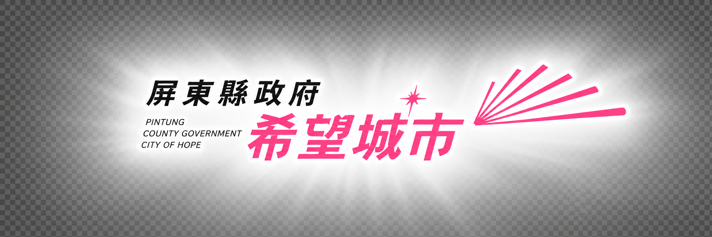
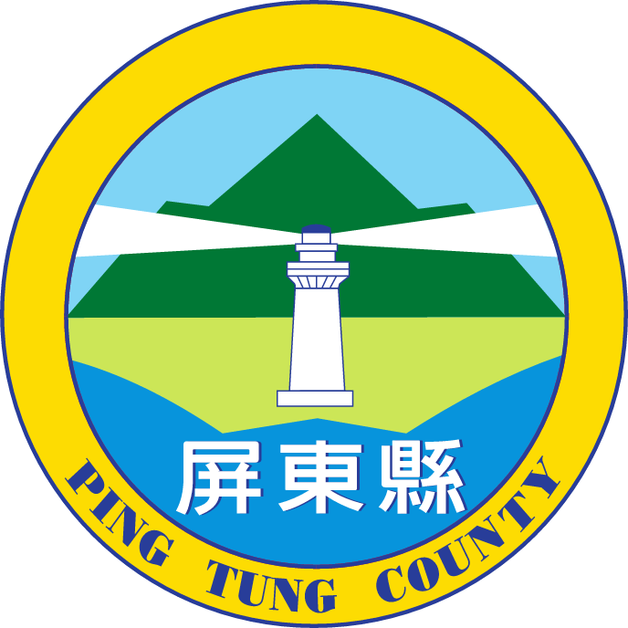

學校持續改善教室照明與課桌椅配置，打造明亮舒適的護眼環境。積極落實「3010護眼行動」、「戶外活動120分鐘」及下課教室淨空，培養學生良好護眼習慣。
同時推廣遠視儲備與戶外戴帽觀念，提升親師生對近視預防的重視。在全校共同努力下，學生視力不良率逐年穩定下降。
學校從幼兒園扎根口腔保健，落實早餐後潔牙，並由校長、護理師及「潔牙小天使」共同推動正確潔牙。另結合社區文健站辦理老幼共學，將健康理念延伸至家庭與社區。
學生齲齒率逐年下降，齲齒矯治率、窩溝封填率及塗氟率皆接近100%，成效卓著。
學校以學生健康為核心，營造健康、活力且友善的校園環境。透過健康體位推動策略，將「五正四樂」融入課程與日常生活，引導學生建立正確飲食與運動觀念。
前後測顯示學生健康知能與行為均明顯進步，健康理念已深植校園。
學校結合衛生政策、健康教育、表演藝術及多元宣導，推動反菸拒檳與電子煙防制。課程著重危害認知、拒絕技巧及健康生活能力，協助學生做出自主選擇。
並整合家長、社區與衛生單位資源，共同營造無菸、無檳、安全友善的健康校園。
學校以「正向心理『惠』健康，『農』心戮力愛健保」為主題，推動正向心理健康、全民健保與正確用藥行動研究。透過問卷掌握學生及家長的認知與行為，據以規劃適切策略。
藉此提升親師生對健保與用藥安全的重視，建立正確就醫、用藥觀念及負責任的健康態度。
學校以「滿州韌性・健康起飛」為核心，結合自然生態、在地文化與產業，將健康促進融入校本課程及日常生活。
透過多元課程與實際行動，引導學生從生活中學習健康、從土地中認識家鄉。並培養學生守護自我、關懷在地與實踐健康生活的行動力。
學校企劃《校園健康守護特報》實境秀，將珍惜健保、正確用藥及分級醫療融入校園生活。影片結合親師宣誓、棒球隊情境演繹、童軍社區服務、AR桌遊及AI共創主題曲。
成功串聯校園、家庭與社區，將健保政策轉化為溫暖且具行動力的健康教育。
學校以「珍惜健保、正確用藥」為主題，全片運用AI技術創作，突破傳統拍攝在場景、角色與表現形式上的限制。
活潑且富想像力的呈現方式提升影片吸引力，引發學生觀看、討論與分享。透過創新媒材深化健康知能，讓健保與用藥教育更貼近孩子。
餉潭國小積極推動「ECO餉潭學」校本課程，結合在地生態、台美生態學校認證與老幼共學繪本創作，展現永續教育成效，榮獲第10屆國家環境教育獎學校組優等獎殊榮。
石門國小與恆春國小長期深耕戶外教育有成，本次榮獲115年度「教育部戶外教育成效卓著獎」學校績優獎
石門國小：以「跟著luli蝸牛遊學趣」為主題，將排灣族文化與山林智慧融入課程，帶領孩子「從土地出發、朝夢想長大」，培育具文化根基與行動力的下一代。
恆春國小：以「半島TOUR趣，行動永留續」為核心，結合古城、民謠與國家公園優勢，建構安全的螺旋式戶外學習，實踐「在地行動、永續共好」的素養教育！
教育部公布115年閱讀磐石獎，屏東縣推薦學校全數獲獎！
滿州國中、仁和國小、五溝國小及民和國小四校團隊將嚴苛的環境轉化為向上盤旋的動力，讓屏東的孩子們透過閱讀，讓閱讀的種子在家庭與學校扎根。